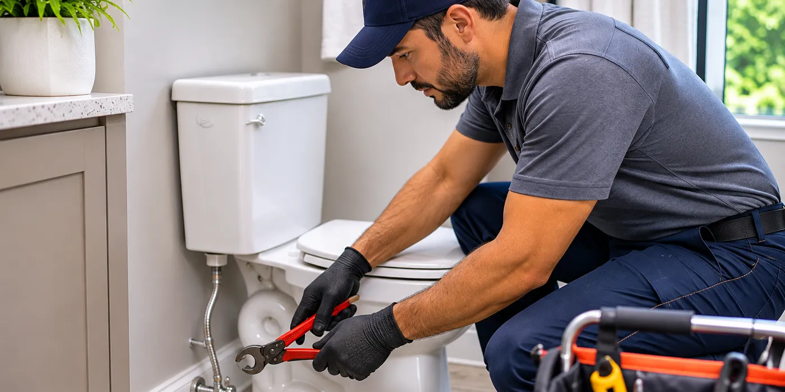

BT Round Rock Plumbing - Round Rock, TX
We take plumbing calls in Round Rock and inspect fixtures, pipes, and drains in homes, shops, and rental units.
Handling Plumbing Calls in Round Rock
When you ring, we ask what you notice at the fixture, where it occurs, and whether water has been shut off. We can often discuss symptoms and the next step by phone. A visit lets us inspect the pipe, valve, or drain when we cannot confirm the cause by phone.
We work in houses, shops, and rental units where the bathroom, kitchen, or utility room sets the access route. Older buildings can place pipes behind finished walls or under floors, while newer construction may use different fittings and shutoff valves. That work takes us through Round Rock, Brushy Creek, Windemere, and Wells Branch.
Before the van leaves, we test the fixture and nearby connections for normal operation. We gather tools, remove packaging, and tidy the work area. We show you the completed work and explain any valve, access panel, or part that you may need to locate later.
Tell us what the fixture is doing
Our work
Find the job you need below. Each of the six opens onto what the work involves, how it is usually done, and what moves the price.
- 01Drain CleaningWe clear slow sinks, backed-up tubs, and blocked drains across Round Rock.
- 02Water Heater RepairWater heater repairs for no hot water, leaks, noises, and pilot faults.
- 03Leak RepairWe locate and repair leaking pipes, valves, fittings, and fixture connections.
- 04Toilet RepairToilet repairs for running tanks, weak flushes, leaks, and loose handles in Round Rock.
- 05Faucet RepairFaucet repair for drips, loose handles, leaks, and low flow in Round Rock.
- 06Sewer Line RepairCamera inspections and sewer line repairs for Round Rock-area properties.
Reach us from homes around Round Rock
When we are open
Outside these hours, leave a message and we will call back.